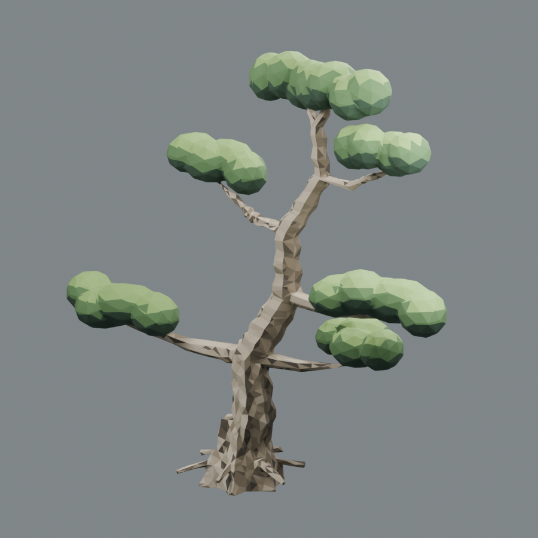
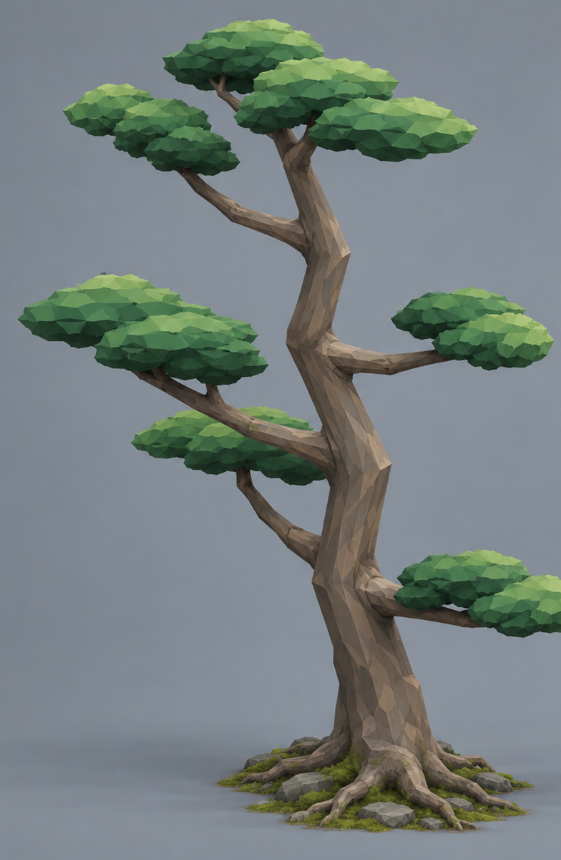
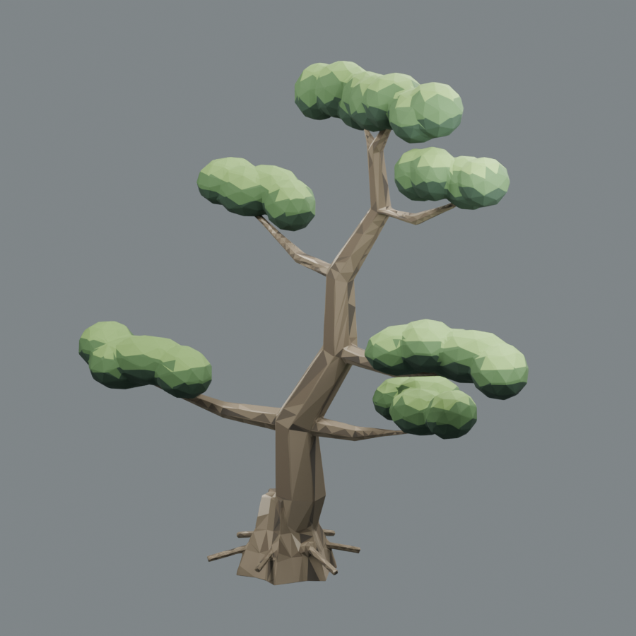
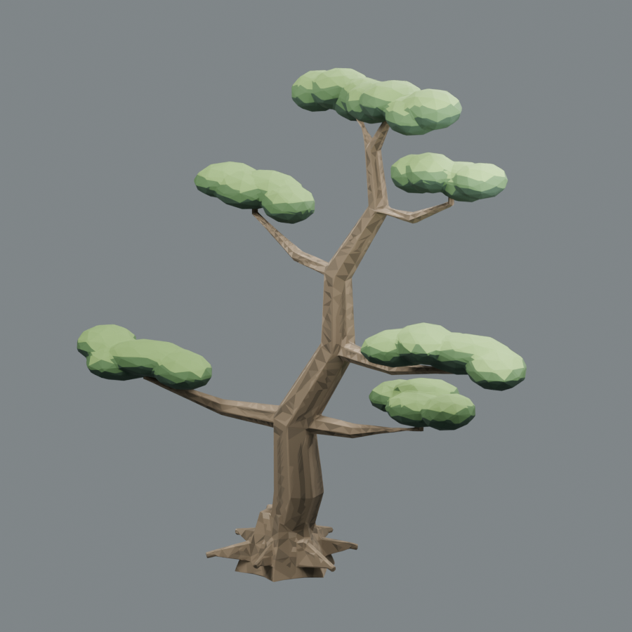
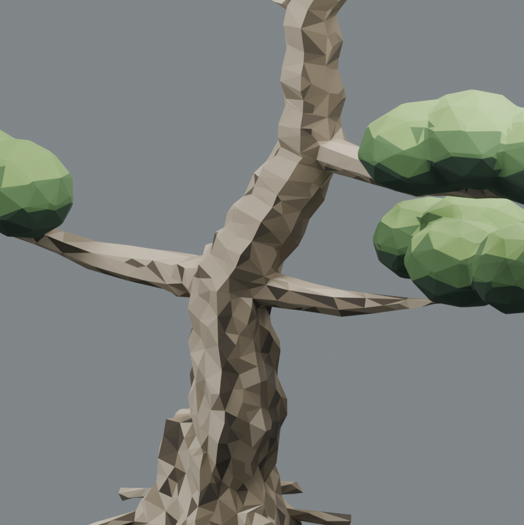
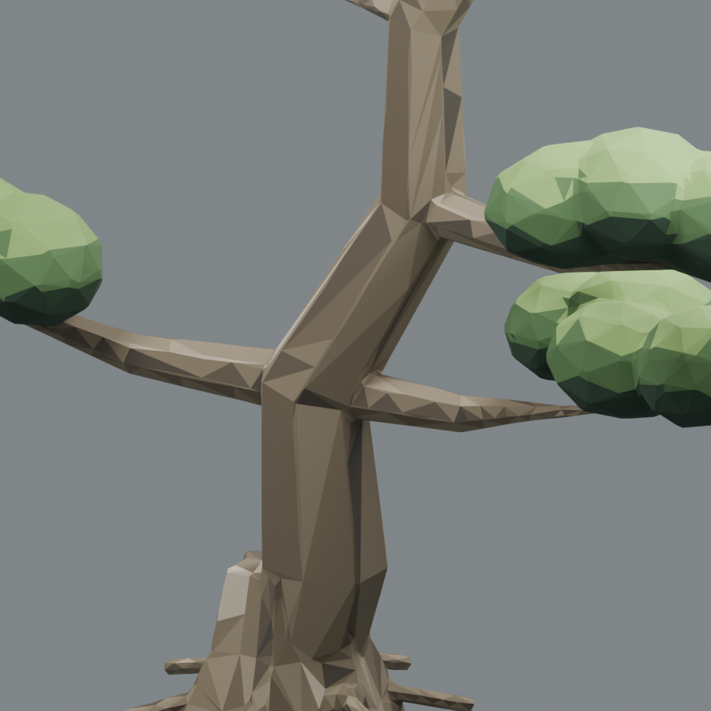
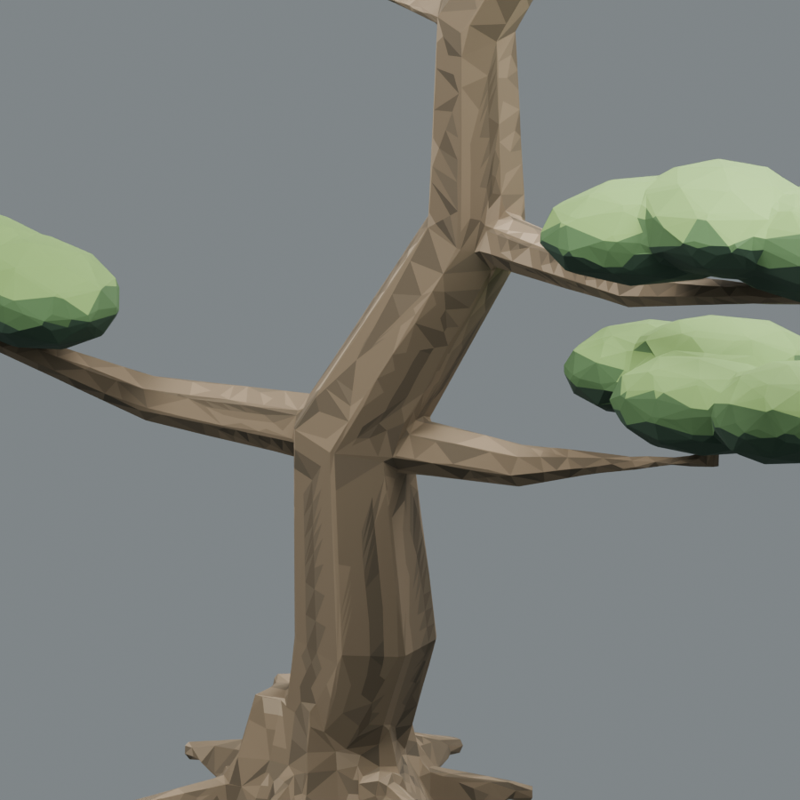

811古松 · 两轮真实Blender迭代
依据你的反馈，以不同木面配色表现苍老。两轮都实际导出GLB、重新导入、同相机同灯光渲染。只处理811这一株；目前没有批量或替换网页里的25株。
被否定基准

物理噪动带来石柱感、孤立深三角；厚冠过圆。此版本不计入新两轮。
原目标

连贯灰褐木面、纵向深沟与浅棱；宽而有厚度的层冠。
新第一轮

移除全部物理噪动，七色纵向分区进入实际GLB。但仍有大平木管、云冠过圆。
新第二轮

长面细分承载窄色带、收紧明暗范围；冠变宽、厚度回调；六向根片减薄融合。
树干近景

你上传的被否定基准 原概念图的树皮、根盘特写；概念图并非3D同机位截图。
原概念图的树皮、根盘特写；概念图并非3D同机位截图。
新第一轮 · 真实GLB回读
新第二轮 · 真实GLB回读根盘两轮对照
工程文件与检查
两轮树皮均为白基色×线性COLOR_0，后续接入必须启用vertexColors。颜色保留在GLB里，不依赖临时预览灯光。每轮保留独立Blend、GLB、构建脚本快照和哈希。
user-round-1：实际GLB · Blender工程 · 顶点色与回读报告
GLB SHA256：8d449ef6629c7df0c8de30d8e326954282c04d50a803d6443e1d9bfb70e550a7
user-round-2：实际GLB · Blender工程 · 顶点色与回读报告
GLB SHA256：79fae93ecc205baac365a5252bdf2d3046cf7ad2e52f4b304ad95efbc5e73f01
两轮总证据与同机位检查
仍有差距：原811分枝走向继续保留，目标的针叶细节和根盘苔藓未完全呈现；不能称为目标图的完美复刻。是否进入游戏及批量，需要后续实际场景与性能验收。